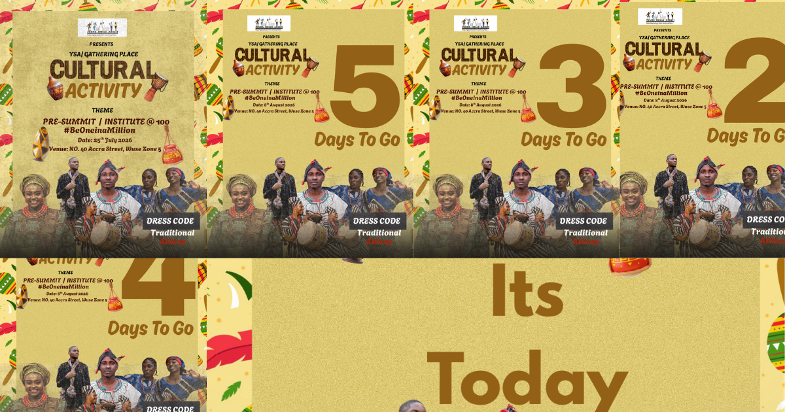

 Cultural Activity Campaign Promotional flyers and social countdown graphics for an event. Project Link
FSY Orientation Graphics Social media posts and orientation visuals for student engagement. Project Link